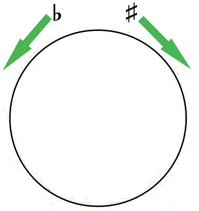
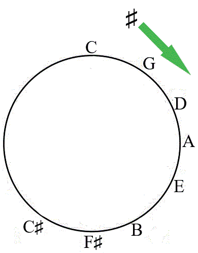

shows the number of sharps or flats in a particular key and the order in which they occur. Moving clockwise around the circle of fifths adds the number of sharps to the key signature. Moving anticlockwise around the circle of fifths adds the number of flats to the key signature. Figure 2.15 shows the direction of sharps and flats on the circle of fifths.

Pitches are organised in a sequence of perfect fifths when moving clockwise on the circle of fifths. A sequence of perfect fifths involves a distance of five notes in an interval of fifths (5 notes), for example, an interval from note C to G (C, D, E, F and G). Pitches are organised starting from the key of C at the top of the circle. Moving clockwise in a sequence of perfect fifths, the series is C, G, D, A, E, B, F♯, C♯ as shown in Figure 2.16.

When moving anticlockwise, pitches are organised in a sequence of perfect fourths. A sequence of perfect fourths involves a distance of four notes in an interval of fourths (4 notes). For example, an interval from note C to F (C, D, E,